五四研学

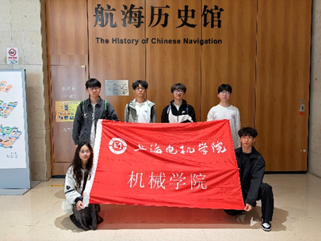


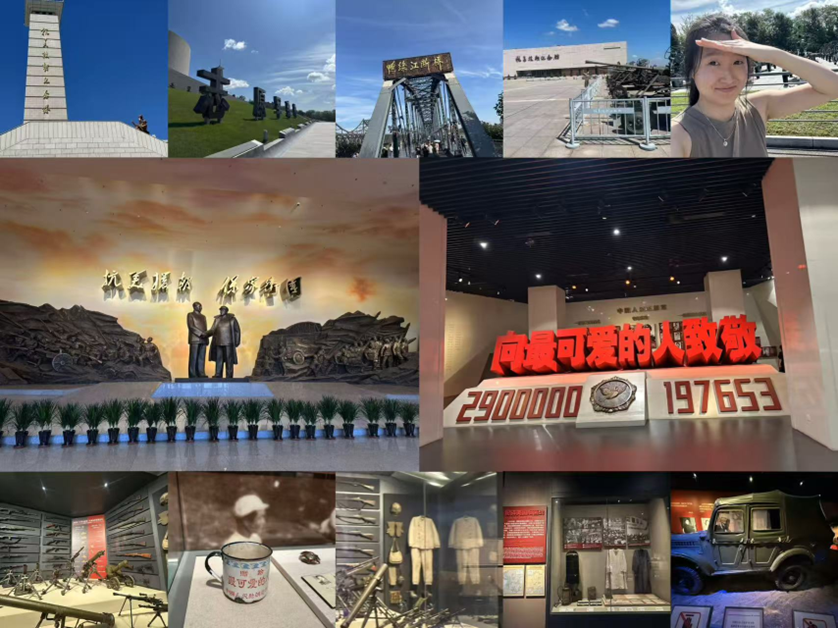


吴梦涵
机制2412
陈思涵
机制2315
雷明祥
机制卓越2411
董世豪
机制2313
金双玉
新车2312
刘思言
机电2412
洪泽华
机制2313
徐文杰
机电2413
唐褚铭
机电2311
刘潘慧
机制2311
罗梓杰
机制卓越2411
袁长旺
机制2413
朱骊安
机制2311
起银顺
机24603
高铂翔
机制2314
黎琦
机24601
谭博允
智能智2411
何修全
机制2413
吕程
车辆2411
段志雨
机制卓越2411



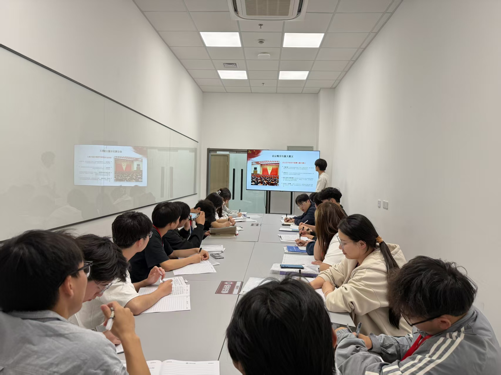
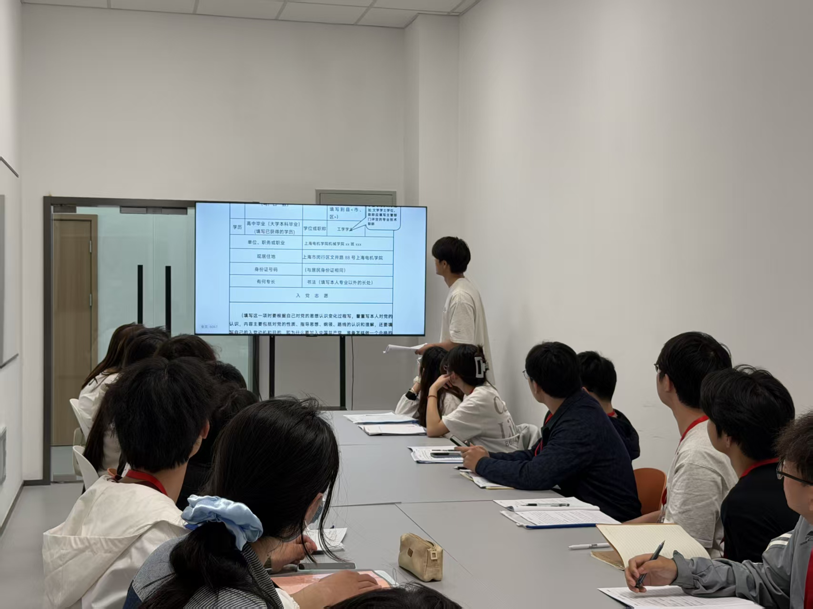
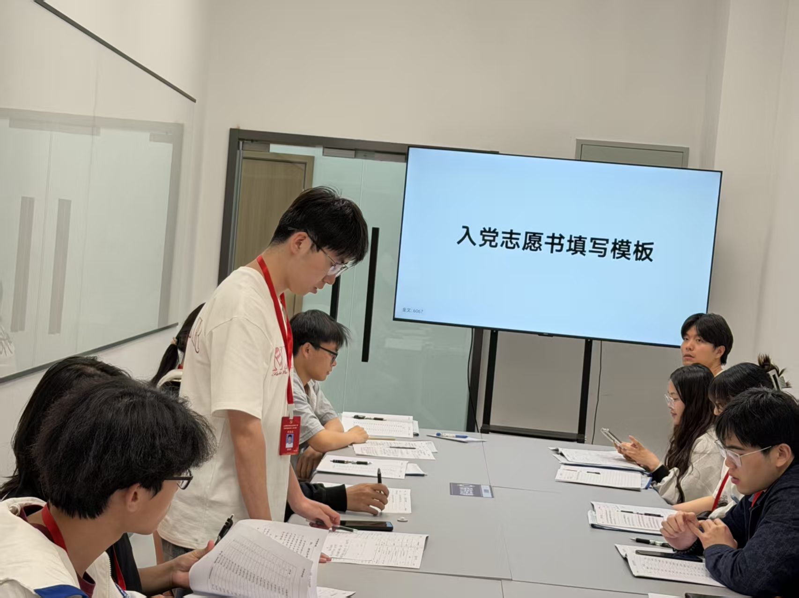


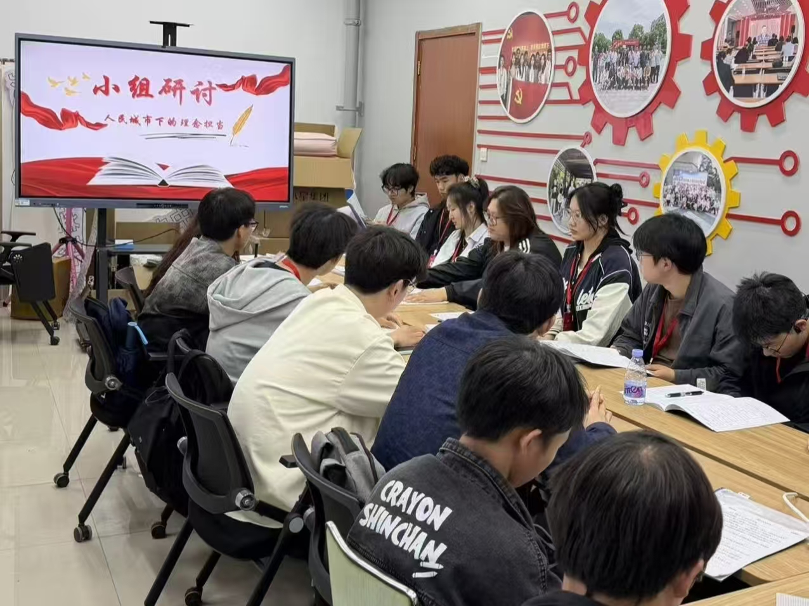
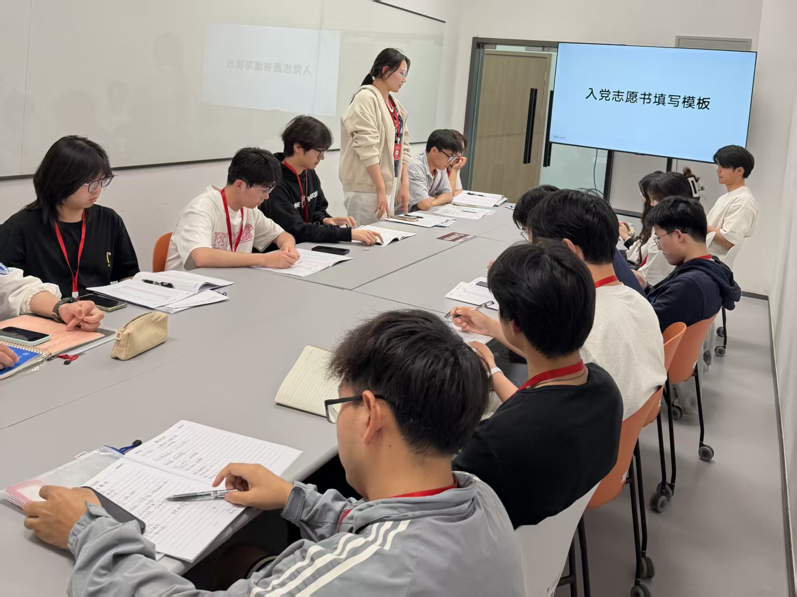


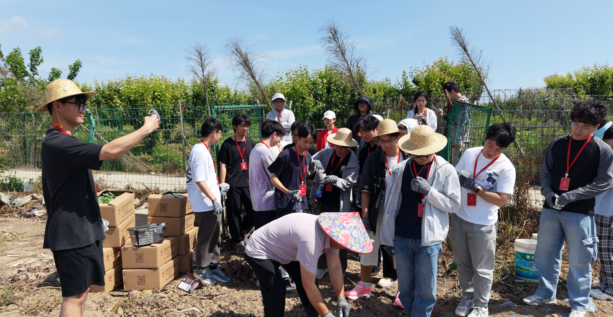
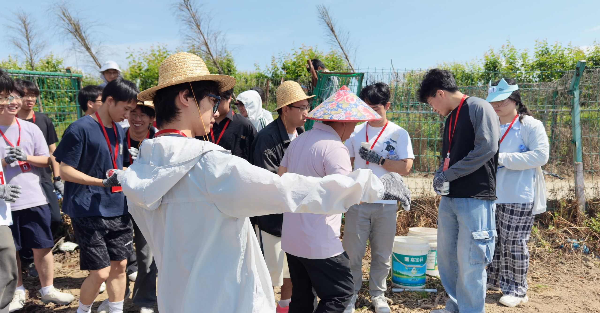
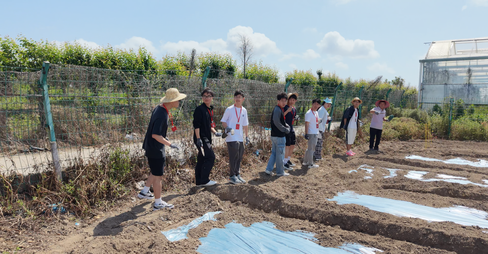
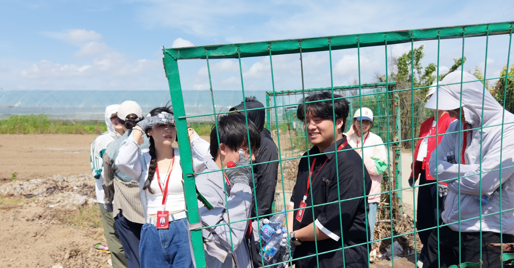
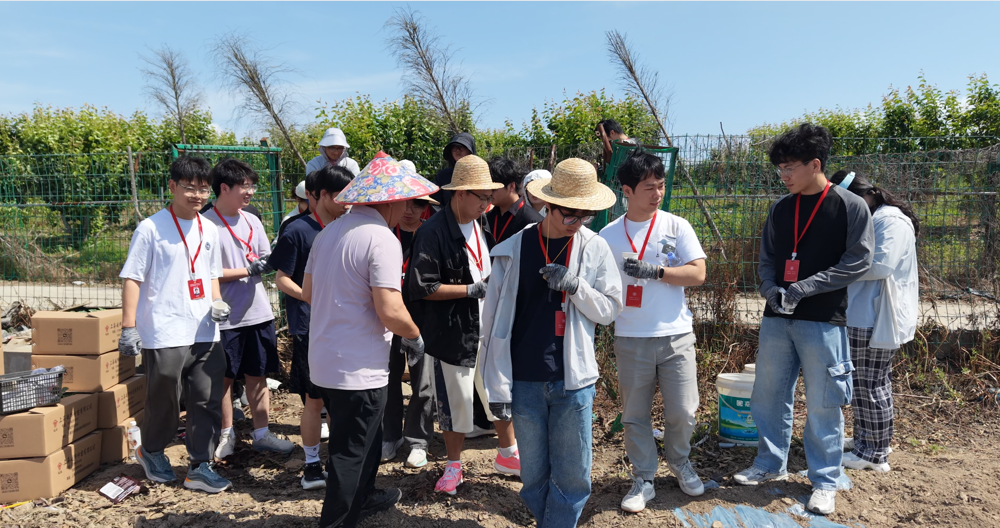
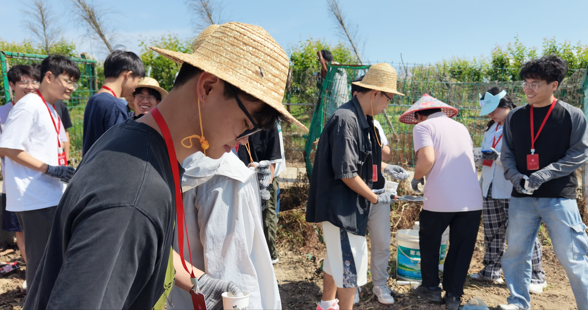
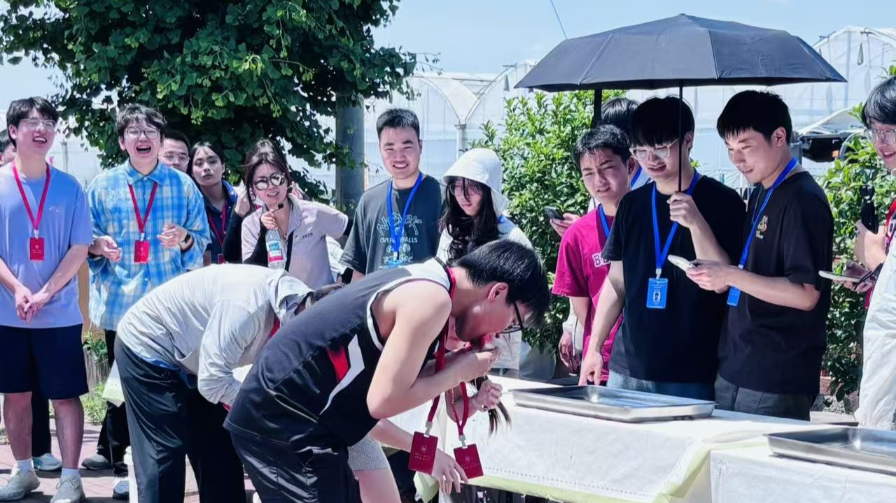

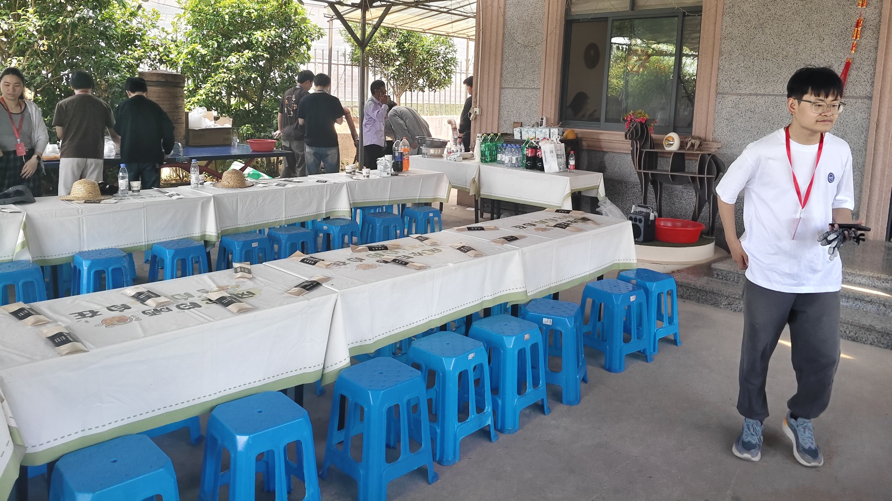
本次红色研学活动以中华优秀传统文化和革命历史为主线，结合航海博物馆实地考察、五四青年节纪念活动、同劳实践以及发展对象培训班的专题学习，帮助我们深化了对红色精神的理解，提升了实践能力与团队协作意识。
在研学与培训过程中，我们通过理论讲座、现场教学、小组研讨、同劳实践等多种形式，完成了“知史爱党、知行合一”的学习闭环。我们以视频、图片和文字的形式，记录了本次研学与培训的收获与思考，也期待能让更多人感受到红色研学的价值与魅力。